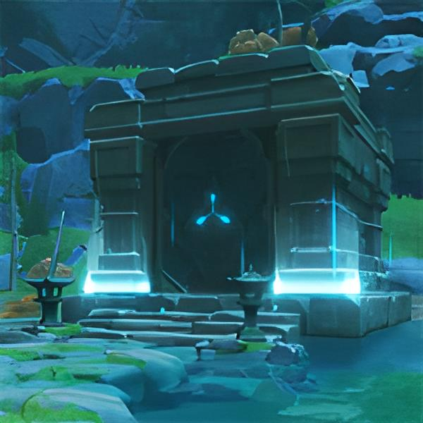

Ступаючий
по лавI
| Рідкість |

|
|---|---|

|
|
| Як получити | |
| Прихований палац Уван | |
|  | |

«Квітка, що розпускається в вогняному полум'ї. Існує легенда про мудру людину, що перейшла море з цією квіткою.»
Квітка, що розпускається лише в бурхливому вогні. Пекучий біль, який він викликає, робить його ще стійкішим.
Вогняно-червона квітка виблискує, як агат. Ступаюча по лаві колись носила цю опалену полум'ям квітку на грудях.
Перед самой смертью Ступающий по лаве сказал людям: «Это цветок, распускающийся только в бушующем пламени. Поки вогонь не оберне мене в попіл, Ви бачитимете сяйво цієї квітки крізь дим і марево».
Згодом люди, які йшли за мерехтінням квітки, вийшли на берег Попелястого моря.
Проте слідів Того, хто ступає по лаві, вони не виявили.
Тільки квітка розпускалася серед попелу.
«Перо гордого фенікса. Здається, можна почути ляскання його крил у вогненному полум'ї.»
Перо, яке мудрець вищипнув у птаха, що пурхав у полум'ї. Якщо його надіти, почуються помахи крил серед гулу вогню.
За легендою існує одинокий птах, який співає у вогні. Люди вклонялися їй, тоді як королі зробили її символом шляхетності.
Надев это перо, ступающий по лаве стал затворником.
Він прийшов і пішов на самоті, не залишивши після себе жодного сліду.
З того часу з боку Попелястого моря долинають голоси.
Ніхто не знає ні співу птахів, ні стогону мудреця
«Пісочний годинник, в якому тече не залишає після себе слідів пісок, що горить.»
Усередині цього пісочного годинника не звичайний пісок, а палаючий. Час витікає швидко, як лава, не залишаючи за собою жодних слідів.
Історія Ступаючого по лаві не закінчилася після того, як він перетнув Попільне море.
Кажуть, він прожив ще сотню років як пустельник. Але ця крайня мить відмовитися від мирської метушні не змогла полегшити його страждання.
Той, хто біг від світу, Ступаючий по лаві не міг винести вічного болю від опіків, а тому створив цей пісочний годинник.
Багряно-красный горящий песок, вспыхивая огненными языками, непрерывно течет в этих часах.
Несчастный Ступающий по лаве не боялся погибнуть в огне, но избежать мучительного жара времени не мог даже он.
После того как Ступающий по лаве лишился всех, кто был ему дорог, душу его вечно терзал холодный огонь лишений, и не было силы, которая могла бы сопротивляться ему.
Легендарний кубок, здатний витримати екстремально високу температуру. Він хоч і порожній, але не остигає й досі.
Кубок, колись наповнений лавою. Він досі зберігає тепло. Належав він мудрецю, що ступає по лаві, і був до країв наповнений мудрістю.
Мудрець, що ступає по лаві, погравав цим кубком, і навіть бурхливе полум'я не змогло його пошкодити.
Легенди свідчать, що мудрець черпав їм лаву і пив, наче це було вишукане вино.
І якщо вино від жару випаровується, то мудрість його вистояла випробування вогнем.
Для мудреця вино служило лише іскрою, яка розпалювала вогонь таланту. Трохи алкоголю могло перетворити вогник на ревуча полум'я натхнення. Кубок був безмовним свідком народження мудрості у вогні.
Перед останньою подорожжю кубок, що ступає по лаві, наповнився зарозумілістю.
«Корона мудреця, що перетнув палаюче море. Колись вона увінчувала оточеного полум'ям сміливця і випромінювала яскраве світло.
Стародавня тіара, що колись належала мандрівнику з Попелястого моря. Якщо довго дивитися на неї, то можна побачити силует людини, що чорніє на тлі вогню.
Ступающий по лаве, тот самый скиталец из Лавового моря, вырезал тиару из красного агата, чтобы пламя и высокие температуры были ему не страшны.
Тіара була створена з розумом та терпінням. Вона захищає від вогню і викликає страх і заздрість як у молодиків, так і у людей похилого віку.
«Як цей вискочка наважився кинути виклик полум'ю Попелястого моря! Такого блюзнірства не траплялося століттями! «Вогняне море обов'язково поглине його, оберне в попіл і підніме його в небо, щоб розвіяти в ніщо...»
Сповнений заздрістю вчитель зажадав від свого учня, щоб той ступив у вогняне море з тіарою на голові. І тоді він побачив, як господар тіари вільно ходить по лаві і йде за горизонт.
хто ступає по лаві
хто ступає по лаві
що ступає по лаві
хто ступає по лаві
хто ступає по лаві
| Квітка життя | ||
|---|---|---|
| Рідкість |
|
|
| ХП | 645 - 3,571 | 717 - 4,780 |
| Перо смерті | ||
|---|---|---|
| Рідкість |
|
|
| Сила атаки | 42-232 | 47-311 |
| Піски часу | ||
|---|---|---|
| Рідкість |
|
|
| ХП % | 6.3-34.8% | 7.0-46.6% |
| Захист % | 7.9-43.5% | 8.7-58.3% |
| Сила атаки % | 6.3-34.8% | 7.0-46.6% |
| Майстерність стихій | 25-139 | 28-187 |
| Восст. енергії % | 7.0-38.7% | 7.8-51.8% |
| Кубок простору | ||
|---|---|---|
| Рідкість |
|
|
| ХП % | 6.3-34.8% | 7.0-46.6% |
| Захист % | 7.9-43.5% | 8.7-58.3% |
| Сила атаки % | 6.3-34.8% | 7.0-46.6% |
| Майстерність стихій | 25-139 | 28-187 |
| Восст. енергії % | 7.0-38.7% | 7.8-51.8% |
| Бонус Елемент. урону % | 6.3-34.8% | 7.0-46.6% |
| Бонус Фіз. урону % | 7.9-43.5% | 8.7-58.3% |
| Корона розуму | ||
|---|---|---|
| Рідкість |
|
|
| ХП % | 6.3-34.8% | 7.0-46.6% |
| Захист % | 7.9-43.5% | 8.7-58.3% |
| Сила атаки % | 6.3-34.8% | 7.0-46.6% |
| Майстерність стихій | 25-139 | 28-187 |
| Восст. енергії % | 7.0-38.7% | 7.8-51.8% |
| Шанс кріт. попадання % | 4.2-23.2% | 4.7-31.1% |
| Крит. урон % | 8.4-46.4% | 9.3-62.2% |
| Бонус лікування % | 4.8-26.8% | 5.4-35.9% |
компанією HoYoverse. Genshin Impact ™ не є зареєстрованим
товарним знаком компанії HoYoverse Co., Ltd.